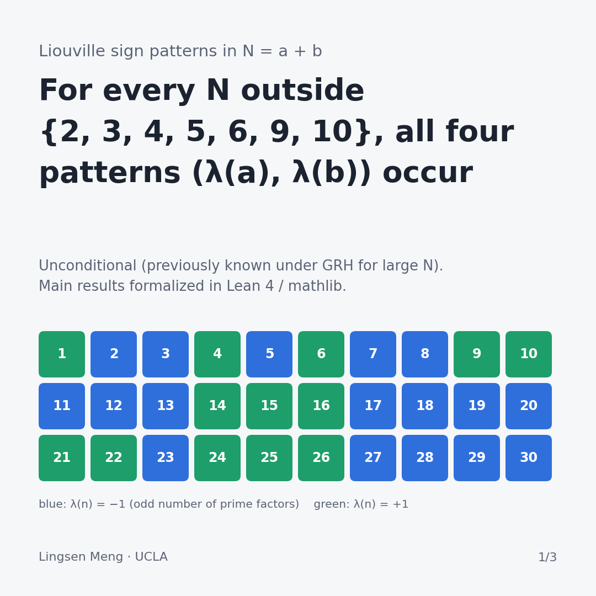
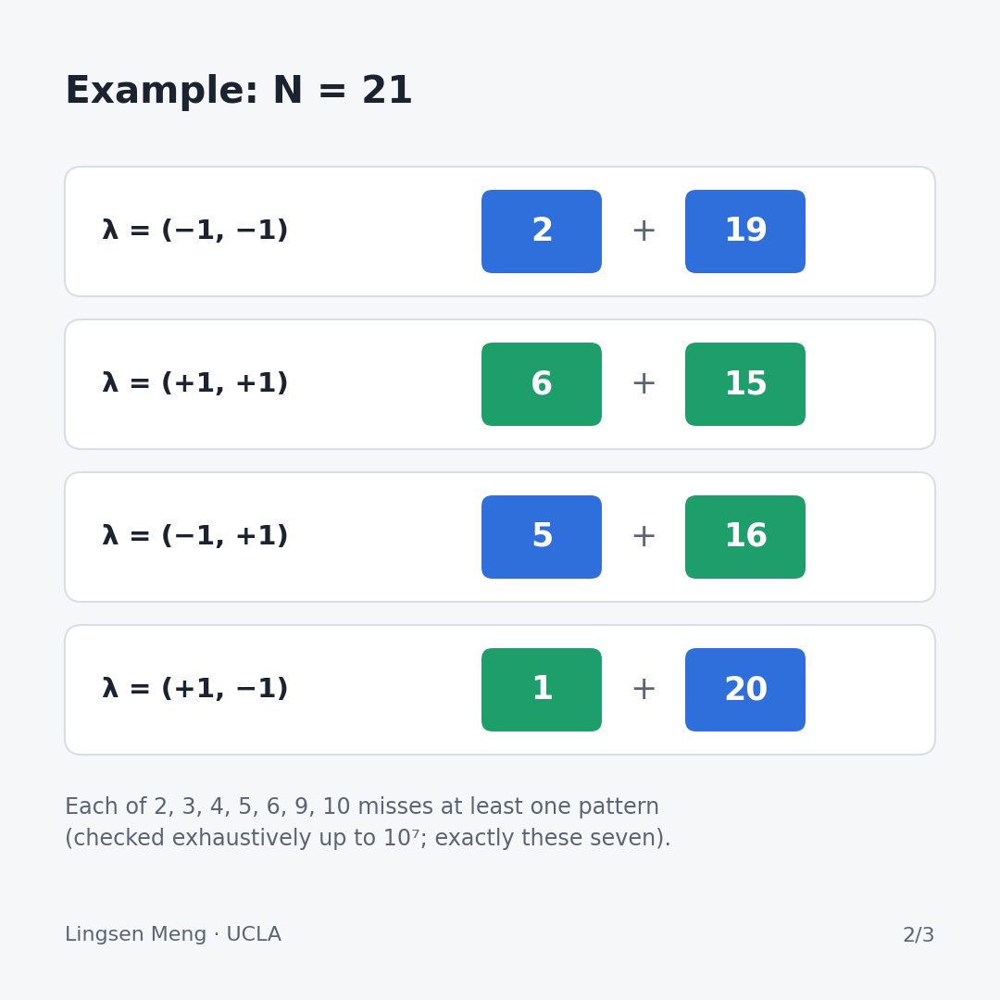

Colouring the integers in two colours: a relaxed Goldbach problem, settled for every integer
Goldbach's conjecture says that every even number larger than 2 is a sum of two primes, and it is still open after almost three centuries. A natural relaxation replaces "prime" by a weaker property that primes share with many other numbers, and asks whether the relaxed statement can at least be proved. This post describes one such relaxation, which we have now settled for every integer, with no unproved hypothesis and with a computer-checked proof. The paper is available as a preprint (eScholarship, PDF), and the Lean code is at github.com/lsmeng/liouville-sign-patterns.
1. Two colours
Write a number as a product of primes and count the primes, with repetition, e.g. 12 = 2×2×3 uses three primes and 6 = 2×3 uses two. We colour the number blue if the count is odd and green if it is even. Thus every prime is blue, 1 (which uses no prime) is green, and multiplying by any prime always flips the colour. Mathematicians call this colour the Liouville function, λ(n) = −1 for blue and +1 for green.

2. The question
Split N into two positive integers, N = a + b. Each part has a colour, so there are four possible colour patterns: blue + blue, green + green, blue + green and green + blue. The question is whether every N can be split in all four ways. The blue + blue case is the relaxed Goldbach problem: Goldbach asks for two primes, whereas here each part only needs an odd number of prime factors (e.g. 8 = 2×2×2 counts as blue).

3. What was known
The blue + blue question for even numbers was asked on MathOverflow in 2018, and it is attributed to Shusterman in the literature. In 2024 Alexander Mangerel proved in IMRN that for N ≥ 11 the two parts cannot always have the same colour, nor always different colours, which already gives the mixed patterns. However, this does not tell blue + blue apart from green + green. In a second paper (arXiv:2412.17199) he proved that all four patterns occur, with a lower bound on how often, but only for large N without too many small prime factors, and only assuming the Generalised Riemann Hypothesis. In September 2026 an anonymous repository gave an unconditional proof of the blue + blue case for even N, formalized in Lean.
The reason even this relaxed version is hard is known as the parity problem. The main tool for studying primes, sieve methods, cannot distinguish numbers with an odd number of prime factors from numbers with an even number, and this is exactly the distinction the question asks about.
4. What we proved
Every integer N ≥ 2 outside {2, 3, 4, 5, 6, 9, 10} can be split as a + b in each of the four colour patterns, with no hypothesis, and each of the seven exceptions really misses a pattern. In addition, we obtained a short new proof of Mangerel's IMRN theorem, and a more general statement: for any completely multiplicative colouring f with f(2) = f(3) = f(5) = −1, a prime p can miss a pattern only if f agrees with the Legendre symbol (the quadratic-residue pattern mod p) on the numbers below p/2. This condition cannot be removed, e.g. colouring by the Legendre symbol mod 43 really makes 43 miss both blue + blue and green + green.
5. The idea of the proof
The proof is by contradiction, and it is enough to consider a prime p that misses one of the same-colour patterns, say green + green. This gives a single rule, that no a + b = p has both parts green. Together with the fact that multiplying by 2, 3 or 5 flips the colour, the rule propagates like the clues in Minesweeper, and it eventually forces the colouring mod p to be multiplicative, i.e. to coincide with the Legendre symbol. However, the Legendre symbol always colours some small prime green, whereas every prime is blue, which is the contradiction.
The odd case was the difficult part. For even N a missing pattern gives two such rules, whereas for odd N it gives only one, and the propagation sometimes runs around a cycle without reaching a point where the colour is known. These "cyclic" primes are rare (21 below two million, e.g. 19, 67, 283 and 1279), and for them the rule for multiplication by 5 is actually needed. With 2 and 3 alone the argument fails, and there are counterexample colourings.
6. How we checked it
The main results are formalized in Lean 4 with mathlib, with no unproved steps and no external results, and the axiom audit shows only the three standard axioms of Lean. Thus the correctness of the main theorem does not rest on human reading of the proof. We also checked every N up to 107 by computer (the exceptions are exactly the seven listed above), and the proof went through three rounds of independent review. The key research ideas, the direction and which approaches to pursue were my own decisions, while AI tools were used a lot for the detailed arguments, the numerics, the Lean code and cross-checking; the paper includes a statement on the use of AI tools.
Limitations
This is not Goldbach's conjecture, since composite parts are allowed, and the relaxation makes the problem much easier. The result is also qualitative only: it proves that each pattern occurs, but gives no lower bound for how many times. Numerically each pattern gets roughly its expected share, but we cannot prove this. Finally, our literature search found no earlier proof of the odd case, although this is not a guarantee, and I would be glad to hear of any earlier reference.